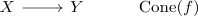

cofiber sequence in Top
Definition
Let $f: X \rightarrow Y$ be a continuous map. Then the cofiber sequence is defined as

Proof
map from the mapping cone of a cofibration to the collapse as homotopy equivalence
Let $f: X \rightarrow Y$ be a continuous map. Then the cofiber sequence is defined as

map from the mapping cone of a cofibration to the collapse as homotopy equivalence